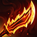
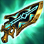
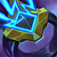
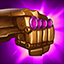
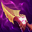
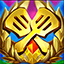

Ryzealautochess
เว็ปนี้เป็นเว็ปที่นำเสนอข้อมูลตัวละคร และ คำศัพท์ในการเล่น TFT
เลือกหมวดหมู่ด้านบนเพื่อดูข้อมูลที่ต้องการ
Comp
ชุดทีมแนะนำสำหรับการเล่น TFT:
- Comp 1: Sniper + Vanguard
- Comp 2: emissary + sorcerer
- Comp 3: heimerdinger + sentinel
Item
รายการไอเท็มที่ใช้ใน TFT:
- Infinity Edge: เพิ่ม Critical Damage
- Guinsoo's Rageblade: ตีเร็วขึ้น 5% ซ้อนทับความเร็วการโจมตี
- Blue Buff: ลดคูลดาวน์สกิล
| รูปภาพ | ชื่อไอเท็ม | ส่วนประกอบ | รายละเอียด |
|---|---|---|---|
| B.F. Sword | ไม่มี | เพิ่มพลังโจมตี +10 | |
 |
Recurve Bow | ไม่มี | เพิ่มความเร็วโจมตี +10% |
 |
Needlessly Large Rod | ไม่มี | เพิ่มพลังความสามารถ +10 |
| Tear of the Goddess | ไม่มี | เพิ่มพลังงานเริ่มต้น +15 | |
 |
Chain Vest | ไม่มี | เพิ่มเกราะ +20 |
| Negatron Cloak | ไม่มี | เพิ่มความต้านทานเวท +20 | |
| Giant's Belt | ไม่มี | เพิ่มพลังชีวิต +150 | |
| Sparring Gloves | ไม่มี | เพิ่มโอกาสคริติคอล +10% | |
 |
Infinity Edge | B.F. Sword + Sparring Gloves | เพิ่มความเสียหายคริติคอล และให้พลังโจมตี |
|  | Guinsoo’s Rageblade |
|
เพิ่มความเร็วโจมตีทุกครั้งที่โจมตี |
 |
Blue Buff | Tear of the Goddess + Tear of the Goddess | ลดคูลดาวน์และเริ่มการต่อสู้ด้วยมานาเพิ่มเติม |
| Warmog’s Armor | Giant’s Belt + Giant’s Belt | เพิ่มพลังชีวิตสูงสุดจำนวนมาก | |
 |
Bramble Vest |
|
ลดความเสียหายจากคริติคอลและสะท้อนดาเมจบางส่วน |
 |
Dragon’s Claw | Negatron Cloak + Negatron Cloak | ลดความเสียหายจากเวทมนตร์และฟื้นฟูพลังชีวิต |
 |
Hand of Justice | Sparring Gloves + Tear of the Goddess | สุ่มเพิ่มคริติคอลหรือดูดเลือดทุกเทิร์น |
 |
Archangel's Staff |
|
ได้รับพลังเวทเพิ่มขึ้นตามเวลาการต่อสู้ |
 |
Adaptive Helm | Negatron Cloak + Tear of the Goddess | ลดคูลดาวน์เมื่อได้รับความเสียหาย |
 |
Bloodthirster | B.F. Sword + Negatron Cloak | ดูดเลือดจากการโจมตี และให้โล่เมื่อพลังชีวิตต่ำ |
 |
Crownguard |
Giant’s Belt +
|
ได้รับโล่และเพิ่มพลังโจมตีเมื่อโล่หาย |
 |
Deathblade | B.F. Sword + B.F. Sword | เพิ่มพลังโจมตีเมื่อสังหารศัตรู |
| Edge of Night |
B.F. Sword +
|
หายตัวชั่วคราวเมื่อพลังชีวิตลดลงต่ำ | |
 |
Evenshroud |
|
ทำให้ศัตรูใกล้เคียงได้รับดาเมจเพิ่มขึ้น |
 |
Gargoyle Stoneplate |
|
ได้รับเกราะและต้านเวทมากขึ้นเมื่อมีศัตรูใกล้ |
| Giant Slayer |
B.F. Sword +
|
สร้างดาเมจเพิ่มเติมแก่ศัตรูที่มีพลังชีวิตสูง | |
| Guardbreaker | B.F. Sword + Giant’s Belt | สร้างดาเมจเพิ่มเติมแก่ศัตรูที่มีโล่ | |
|  | Hextech Gunblade |
B.F. Sword +
|
ดูดเลือดจากการสร้างดาเมจทั้งเวทและกายภาพ |
|  | Ionic Spark |
Negatron Cloak +
|
ลดต้านทานเวทของศัตรูและทำดาเมจเมื่อใช้สกิล |
|  | Jeweled Gauntlet |
|
ทำให้สกิลสามารถติดคริติคอลได้ |
| Last Whisper |
|
ลดเกราะของศัตรูเมื่อโจมตีคริติคอล | |
 |
Morellonomicon |
Giant’s Belt +
|
ทำให้ศัตรูติดเผาไหม้และลดการฟื้นฟู |
|  | Nashor's Tooth |
|
เพิ่มความเร็วโจมตี และให้พลังเวทเพิ่มเติม |
| Protector's Vow |
|
ให้โล่และเพิ่มความเร็วโจมตีเมื่อได้รับดาเมจ | |
 |
Quicksilver | Sparring Gloves + Negatron Cloak | ทำให้ผู้สวมใส่ต้านทานการควบคุมฝูงชน |
 |
Rabadon's Deathcap |
|
เพิ่มพลังเวทอย่างมาก |
| Red Buff |
|
ทำให้ศัตรูติดสถานะเผาไหม้และลดการฟื้นฟู | |
 |
Redemption | Giant’s Belt + Tear of the Goddess | เมื่อพลังชีวิตต่ำ จะฮีลเพื่อนร่วมทีมรอบตัว |
 |
Runaan's Hurricane |
|
การโจมตีปกติสามารถโจมตีศัตรูเพิ่มอีก 1 ตัว |
 |
Spear of Shojin | B.F. Sword + Tear of the Goddess | ฟื้นฟูมานาเร็วขึ้นจากการโจมตี |
| Statikk Shiv |
|
ปล่อยสายฟ้าช็อตศัตรูหลายตัวเมื่อโจมตี | |
| Steadfast Heart | Giant’s Belt + Sparring Gloves | ให้เกราะป้องกันและต้านทานคริติคอล | |
| Sterak's Gage | B.F. Sword + Giant’s Belt | ให้โล่ขนาดใหญ่เมื่อได้รับดาเมจรุนแรง | |
| Sunfire Cape |
Giant’s Belt +
|
ทำให้ศัตรูรอบข้างติดสถานะเผาไหม้ | |
| Tactician's Cape |
|
เพิ่มขนาดทีมสูงสุด +1 | |
|  | Tactician's Crown |
|
ให้ขนาดทีมสูงสุด +1 และมอบโบนัสพิเศษ |
| Tactician's Shield | FryingPan + FryingPan | ให้เกราะและต้านเวทแก่ทีม | |
 |
Thief's Gloves | Sparring Gloves + Sparring Gloves | ได้รับไอเท็มสุ่ม 2 ชิ้นทุกเทิร์น |
 |
Titan's Resolve |
|
เพิ่มพลังโจมตีและเกราะเมื่อโจมตี |
Champions
รายชื่อตัวละครที่แนะนำ:
- viktor: เมจที่มีดาเมจสูงและCCที่ดี
- Sett: แทงค์แนวหน้าแข็งแกร่ง
- warwick: สุดยอดตัวละครที่สามารถพากลับมาชนะได้
ดูข้อมูลตัวละครเพิ่มเติมได้ที่:
ไปยัง Mobalytics TFT Championsดูข้อมูลสเปรดชีตตัวละครได้ที่:
ไปยัง Google Sheets ChampionsVocabulary
ศัพท์ที่ใช้บ่อยใน TFT:
- Econ: การบริหารเงินในเกม
- Roll Down: การใช้เงินทั้งหมดเพื่อตามหาตัวละครที่ต้องการ
- Hyper Roll: การหมุนเงินอย่างรวดเร็วเพื่ออัพเกรดตัวละคร